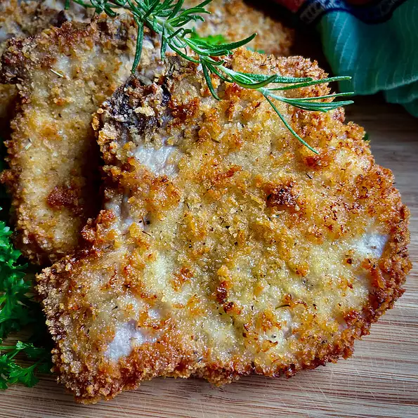

<!DOCTYPE html>

<html lang="en">
    <head>
        <title>Crusted Pork Chops</title>
        <meta charset="utf-8">
    </head>
</html>

<body>
    <h1>Crusted Pork Chops Recipe</h1>
    
    <h3>Description</h3>
        <p>
            These pork chops, prepared in the air fryer, are enhanced by a simple brine.<br/>
             With just a few seasonings in the crust, the chops are tender and juicy,<br/>
              crispy, and just right! Of course you may add more seasonings, if you like,<br/>
               just be careful of hiding the flavor of a simply delicious chop.<br/>
                We enjoyed these pork chops with potatoes in a cheese sauce and oven-roasted asparagus.
            </p>
    <h3>Ingredients</h3>
            <ul>
                <li>4 cups water, divided</li>
                <li>2 tablespoons kosher salt</li>
                <li>2 tablespoons white sugar</li>
                <li>1 sprig fresh rosemary</li>
                <li>1 large bay leaf</li>
                <li>4 (6 ounce) pork chops, about 1/2-inch thick</li>
                <li>1 large egg</li>
                <li>1 cup panko bread crumbs</li>
                <li>2 tablespoons freshly grated Parmesan cheese</li>
                <li>1 teaspoon Italian seasoning blend</li>
                <li>freshly ground black pepper, to taste</li>
                <li>extra-virgin olive oil cooking spray</li>
                <li>1 sprig of fresh parsley for garnish (optional)</li>
                <li>1 sprig of rosemary for garnish (optional)</li>
            </ul>
    <h3>Directions</h3>
            <ol>
                <li><p>Pour 1 cup water in a 4-cup microwave-safe measuring cup.<br/>
                     Microwave until boiling, about 4 minutes. Stir in kosher salt and sugar,<br/>
                      until dissolved. Add remaining 3 cups water to make a brine.</p></li>
                <li><p>Place rosemary sprig and bay leaf in a 1-gallon zip-top bag.<br/>
                     Carefully pour in brine and add pork chops. Seal the bag,<br/>
                      removing as much air as possible, and refrigerate about 2 hours.</p></li>
                <li><p>Remove chops from the brine and discard the brine. Pat chops dry with paper towels.</p></li>
                <li><p>Preheat the oven to 400 degrees F (200 degrees C).</p></li>
                <li><p>Break egg into a shallow bowl and beat lightly.<br/>
                     Combine panko, grated Parmesan, Italian seasoning blend,<br/>
                      and black pepper, and place on a plate or cutting board.<br/>
                       Dip each pork chop in the egg, then coat all sides with<br/>
                        the panko mixture. Spray both sides of the coated chops<br/>
                         with extra-virgin olive oil.</p></li>
                <li><p>Place chops in the air fryer in a single layer,<br/>
                     with chops not touching, and air-fry for 7 to 8 minutes<br/>
                      per side, for a total of 14 to 16 minutes. An instant-read<br/>
                       thermometer inserted into the center of the chops should<br/>
                        read 145 degrees F (63 degrees C).</p></li>
                <li><p>Serve warm, garnished with parsley and additional rosemary sprigs, if desired.</p></li>
            </ol>
</body>